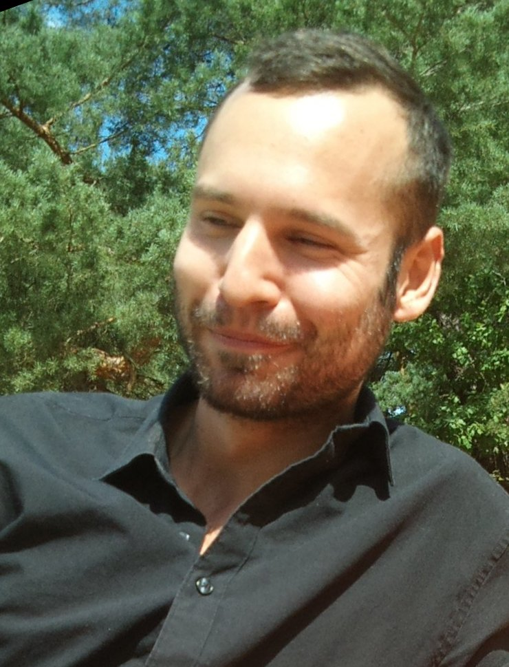

Christoph Mertz
born 1984
french nationality
living in Berlin, Germany

since aug 2021
Staff Engineer at Apheris AI GmbH (Berlin / Remote)
Building a secure platform for distributed computations to enable federated learning.
- technical lead of the infrastructure team of 3, company internal and external consulting on all things system design, infrastructure
- evolving the cloud infrastructure from an MVP to a production ready system (standardization and scaling of IaC setups by a factor of 10, covering multi region support and coordinating initial series of external penetration tests)
- design, implementation and delivery of customer managed computation environments (Apheris Compute Gateway), spanning infrastructure components and kubernetes controllers (k8s, tf, go)
- introduced golang to the organization, now used by the entirety of the software engineering org (bootstrapping through a group of champions and select components, establishment of an interest group with regular small training sessions)
- screening, interviewing and on-boarding across several engineering functions (~50 interviews)
feb 2021 - may 2021
Cloud Engineer / DevOps Engineer for Kiwigrid GmbH (Remote)
Optimization of a new gitops system for an increased deployment velocity for the developer productivity engineering team
- automated migration of helm based kubernetes workloads to kustomize (helm2/3, kustomize, fluxcd2, python)
- implementation of automated kubernetes manifest validation for development teams (some 500k lines of yaml, openapi, open policy agent, rego)
- debugging and removal of performance bottlenecks and throughput issues in the gitops system (fluxcd2, golang, git)
aug 2020 - dec 2020
Cloud Engineer / DevOps Engineer for Kiwigrid GmbH (Freelance, Remote)
Modernization of the existing infrastructure as code setup for google cloud for the developer productivity engineering team
- automation of provisioning and maintenance of production and pre-production kubernetes clusters (kubernetes, gke, pulumi-python, jenkins)
- implementation of a gitops system for kubernetes to replace an aging fleet of Jenkins servers (fluxcd2, golang, git)
july 2019 - nov 2020
Lead Cloud Engineer for elearnio GmbH (Freelance, Remote)
Provided elearnio with a standardized and automated delivery system and cloud infrastructure, enabling high delivery velocity and optimized for operator time.
- implementation of aws ecs based clusters (aws ecs, fargate, terraform)
- setup and maintenance of a continuous delivery system (gitlab ci, terraform, ruby)
mar 2018 - oct 2019
Lead Infrastructure Engineer for Shuttle Holdings (Freelance, Remote)
In charge of infrastructure development for a white-label cryptocurrency exchange product.
- implementation of kubernetes based system (kubernetes, helm, golang) and continuous delivery system (gitlab, cloudbuild) for a fleet of 40 distinct services over multiple environments
- setup and operations of crypto-currency nodes, notably a setup for a full archive ethereum node reaching the performance limits of GCP offerings at the time (and one of a handful of nodes with a similar setup worldwide in 2018)
- vendoring of (almost) the entirety of the systems dependencies to protect against targeted attacks (npm, golang, docker)
- setup of a highly available KDB+ based ticker system for cryptocurrency pairs
- building reliability into the core product (golang)
oct 2016 - feb 2018
Senior Software Engineer at Fraugster Ltd. (Berlin, Germany)
Development of an artificial intelligence based system for online fraud detection of credit card transactions
- implementation of features for fraugsters main ai engine (golang)
- migration of the main ai engine to a container orchestrator (docker, kubernetes)
- development of a platform for analytical simulations, model training and backtesting (kafka, postgresql, golang)
- leading job interviews for software engineers and site reliability engineers
apr 2014 - mar 2016
Senior Software Engineer at Aroundhome (Remote / Berlin, Germany)
I built the operations function (which was previously carried by the software development team) from scratch and was in charge of the maintenance and evolution of the application server infrastructure (bare metal)
- implementation of configuration management and operation of the application server cluster (chef, Debian GNU/Linux, ~60 servers) and the companys load-balancers and reverse proxy servers (nginx)
- setup of the monitoring infrastructure (logstash, elasticsearch, kibana, graphite, golang, ~3k events/s)
- prototyping of a container based application server cluster and deployment infrastructure (coreos, kubernetes, docker, golang)
- consulting for development teams
may 2012 - apr 2014
Software Engineer at Aroundhome (Berlin, Germany)
Driving modernization initiatives for a Ruby on Rails monolith
- Development of a high volume service for matching end customer requests to vendor offers focused on optimizing for customer preferences and global revenue optimization (ruby, mysql, redis)
- Implementation of a numeric simulation based approach for automated search engine advertisement (ruby, mysql) in collaboration with the BI team, reducing initial simulation time from ~6h to ~30min over two major iterations
- onboarding and mentoring of junior developers
nov 2009 - jan 2012
Software Engineer at Verti Versicherung AG (Teltow, Germany)
Development of an IBM mainframe based multi-tier insurance system
- development and maintenance of a mainframe based middleware (IBM CICS, CTG, WAS) used by several country subsidiaries
- coordination between development teams of Direct Line Italy and RBS insurance India
- implementation of enterprise application components (java se, spring)
apr 2008 - apr 2009
Student research assistant at the Fraunhofer Institute for Open Communication Systems (Berlin, Germany)
In charge of technical implementation in the context of the Autonomic Network Architecture Project (Information Society Technology, FP6) for the competence center Network Research
- design of an adaptive monitoring system for ANA
- specification and implementation of network-monitoring components (c99, GTK)
- representation of the project at the ICT 2008, attendence to project-meetings and work on deliverables for the EU
- Diploma Thesis in the context of the project
july 2007 - feb 2008
Intern at IBM Deutschland Research & Development GmbH (Böblingen, Germany)
Development of a system to automate deployments of VM based environments for build verification tests in software development
- design and setup of VMware clusters and SANs for VM-provisioning (vmware vi, rhel, debian, ibm x series, ibm ds4000)
- development of components for the in-house monitoring solution (java se, php, c99)
- documentation and user support (2nd, 3rd level)
apr 2007 - apr 2009
Systems administrator at ubuntu-eu.org (Remote)
Hosting and administration for european ubuntu locoteams, notably ubuntu-fr.org and ubuntuusers.de, with about 150.000 unique visitors a day
- system-administration of the web cluster (ubuntu)
- setup and administration of the mail system (exim, mailman, postfix)
2007
Software Developer for Anterist+Schneider Automotive GmbH (Freelance, Saarlouis, Germany)
Development of an application to support planning of internal logistics, especially pick routes for orders
2003
Intern at IKS, communal IT service provider for the city of Saarbrücken (Germany)
1st level support for Windows workstations in the cities offices
1999
Intern at Anterist+Schneider GmbH (Saarbrücken, Germany)
Worked with the senior staff on the companys token ring installation
Software Development
- experience with different programming languages, paradigms and ecosystems (java, ruby, golang, c, perl, php, lua) with an emphasis on ruby and golang
- agile software development practices and frameworks (tdd, pair programming, scrum, kanban)
- defining software architecture and knowledge of common design pattern
- setup and ownership of development infrastructure, integration and deployment processes (gitlab, capistrano, jenkins, continuum, maven, git, svn)
Operations
- 18 years of experience managing linux servers in diverse settings (debian, ubuntu, rhel, coreos, alpine)
- proficient with configuration management and task automation (bash, ruby, golang, multi dc, chef) as well as infrastructure as code (terraform, pulumi) tools
- knowledge of container (mostly docker) and virtualization technologies (virtualbox, kvm, vagrant, vmware enterprise products)
- experience with kubernetes (v1.0.13-v1.22)
- experience with Google Cloud Platform offerings (especially gke) and Amazon Web Services (ec2, ecs, eks, fargate)
- log event and time series based monitoring (elasticsearch, logstash, fluentd, kibana, collectd, influxdb, graphite, grafana, some prometheus)
2011
2009
Sun Certified Programmer for the Java Platform
2009
Diplom (FH) in Informatik
University of applied sciences Saarbrücken, Germany
2009
Maîtrise en génie mathématique et informatique
Paul Verlaine University Metz, France
2008
2006
B.Sc. in Computer Science
Paul Verlaine University Metz, France
2003 - 2009
Studies in Computer Science
Institut supérieur franco-allemand de techniques, d'économies et de sciences (ISFATES)
2003
French and german university entrance diploma
Deutsch-Französisches Gymnasium Saarbrücken, Germany
![GitHub Profile]( "GitHub Profile")
![LinkedIn Profile]( "LinkedIn Profile")